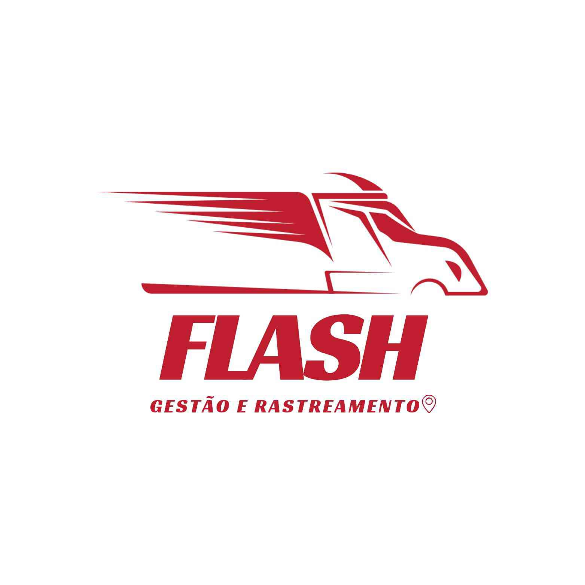

Conheça nosso aplicativo: Flash

O que é o Flash?
O Flash é um aplicativo desenvolvido para facilitar a gestão e o rastreamento de mercadorias e entregas, atendendo tanto empresas quanto pessoas físicas. Ele permite acompanhar em tempo real a localização de caminhões e pedidos, automatizar o controle de estoque e visualizar rotas com previsão de chegada, tudo isso por meio de uma plataforma acessível em celular, tablet ou computador.
Além do rastreamento ao vivo, o Flash oferece recursos como notificações de movimentações, histórico completo de atividades, controle de acesso por tipo de usuário e um painel organizado com status dos pedidos. Tudo é apresentado de forma simples, intuitiva e eficiente, garantindo mais organização, agilidade e segurança nas operações logísticas.
Com o Flash, o usuário tem mais controle na palma da mão — seja para gerenciar entregas de uma empresa ou acompanhar pedidos pessoais. É tecnologia pensada para facilitar o dia a dia, reduzir erros e melhorar a experiência no transporte e na logística.

Como funciona o Flash?
O Flash funciona como uma central inteligente para rastrear pedidos e monitorar entregas com mais controle e precisão. Assim que o veículo sai para entrega, o aplicativo começa a acompanhar sua localização em tempo real pelo mapa, exibindo também o trajeto, paradas e o tempo estimado de chegada.
O sistema envia notificações automáticas sempre que há movimentações importantes, como saída do produto, entrega confirmada ou alteração de rota. O status de cada pedido — se está pendente, em rota ou entregue — é atualizado em tempo real na tela.
Além disso, todas as atividades ficam registradas no histórico, permitindo consultas a qualquer momento. E tudo isso pode ser acessado de forma simples, por celular, tablet ou computador, com uma interface clara e intuitiva.
Funcionalidades do Flash
- Rastreamento em tempo real no mapa
- Notificações automáticas de entregas e movimentações
- Visualização de rotas e tempo estimado de chegada
- Histórico completo de atividades e entregas
- Acesso multiplataforma (celular, tablet e computador)
- Status do pedido visível em tempo real (pendente, em rota, entregue)